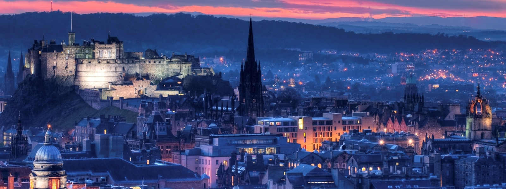

Welcome to Edinburgh Edinburgh is the capital of Scotland
Recognised as the capital of Scotland since at least the 15th century, Edinburgh is the seat of the Scottish Government, the Scottish Parliament and the supreme courts of Scotland.
The city's Palace of Holyroodhouse is the official residence of the Monarchy in Scotland.
Historically part of the county of Midlothian, the city has long been a centre of education, particularly in the fields of medicine, Scots law, literature, the sciences and engineering.
It is the second largest financial centre in the United Kingdom and the city's historical and cultural attractions have made it the United Kingdom's second most popular tourist destination, attracting over one
million overseas visitors each year.
Edinburgh is Scotland's second most populous city and the seventh most populous in the United Kingdom.
The official population estimates are 464,990 (2012) for the Locality of Edinburgh
(Edinburgh pre 1975 regionalisation plus Currie and Balerno), 507,170 (2016) for the City of Edinburgh,
and 1,339,380 (2014) for the city region.[2][3] Edinburgh lies at the heart of the Edinburgh and
South East Scotland city region comprising East Lothian, Edinburgh, Fife, Midlothian, Scottish Borders and West Lothian.